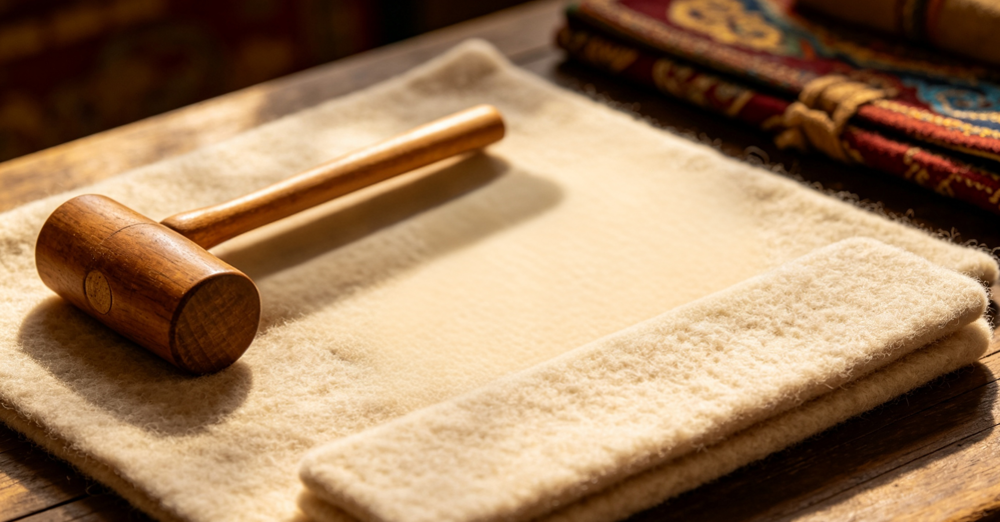
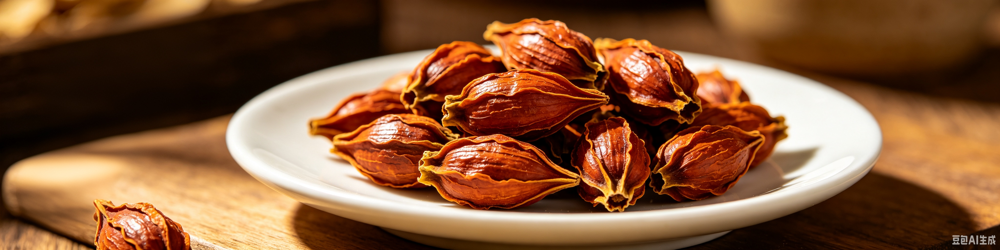
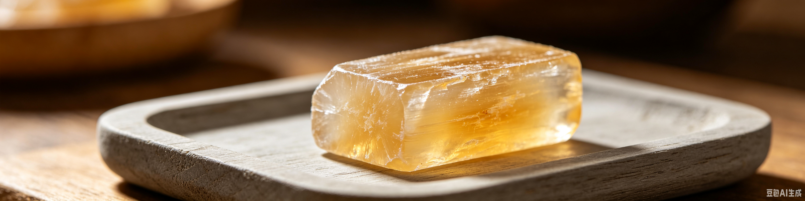
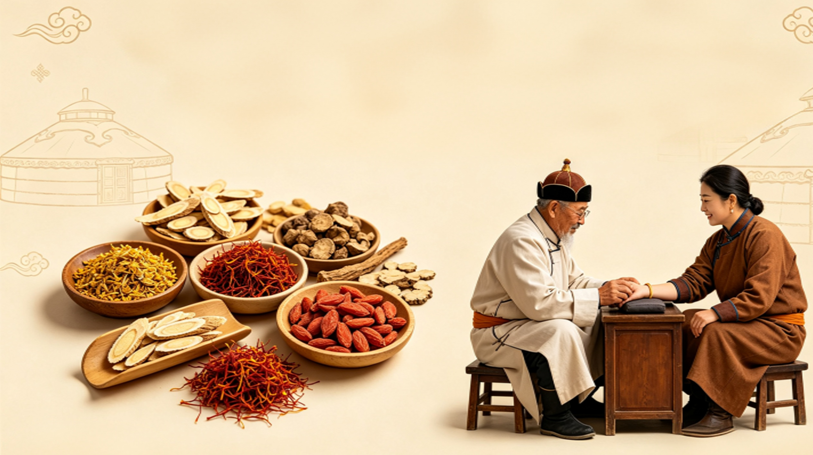

手法篇
蒙医正骨讲究眼看、心想、手摸三诊合一。喷酒正骨，以酒行气，以手复位，是草原传承千年的正骨智慧。
工具篇
青铜镜、银杯、柳木夹板、毡垫、沙袋……取材自然，贴合人体，温和而有效。
用药篇
矿物、草木、珊瑚珍宝配伍成方，内外兼治，活血止痛，促进骨骼愈合。
Special Therapies
特色疗法
千年智慧 · 手法复位
三诊合一
眼
观形
心
会意
手
触骨
十种基础手法
十种
手法
手法
抖
提
压
推
拉
揉
捏
按
扳
摇
十四种按摩手法
捻
滚
压
擦
揉
摇
搓
颠
推
拿
掐
撑
捏
嵌

凸面青铜镜
用于观察伤处形态，辅助判断骨折错位，是传统蒙医诊断的重要器具。

银杯
盛放白酒，用于喷酒正骨，银质洁净，有助于舒筋活血。

蛇蛋花宝石
传统疗愈宝石，配合手法使用，寓意安定骨骼、平顺气血。

柳木夹板
韧性好、重量轻，用于骨折复位后固定，不影响气血运行。

毡子压垫
羊毛制成，柔软护肌，避免夹板直接压迫皮肤造成损伤。

沙袋
稳定患肢、保持体位，帮助骨骼在正确位置上愈合。
蒙医用药取自天地草木矿物，配伍温和，活血止痛，促进骨骼再生。

旭日图乌日勒
经典骨伤方，以红珊瑚等矿物入药，活血化瘀、消肿止痛。

敖民乌日勒
清热止痛，用于骨折后红肿热痛，帮助恢复气血通畅。
七珍散
珍珠、珊瑚等珍贵药材配伍，止血镇痛、修复筋骨损伤。

十五味樟脑散
温经通络、散寒止痛，适合寒性体质与陈旧性骨伤。
正骨六大步骤
整复
固定
按摩
药物
护理
锻炼
治疗流程
1
问诊
了解病史与受伤经过
2
触诊
手摸心会，判断骨折位置
3
复位
手法矫正骨骼错位
4
固定
夹板固定，保持对位
5
养护
药物调理与康复训练
股骨骨折复位
患者股骨骨折，经蒙医手法复位、夹板固定与药物调理三月后，恢复正常行走。
腰椎间盘突出
长期劳损腰痛，经正骨手法与按摩调理，疼痛明显缓解，活动恢复正常。
肩周炎
肩部僵硬活动受限，经手法松解与功能锻炼，关节活动大幅改善。
脊柱侧弯
青少年脊柱侧弯，坚持正骨矫正与训练，侧弯角度明显减小。
图片展示
